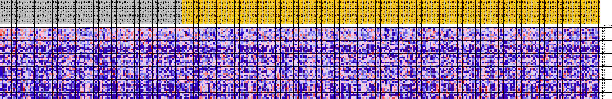
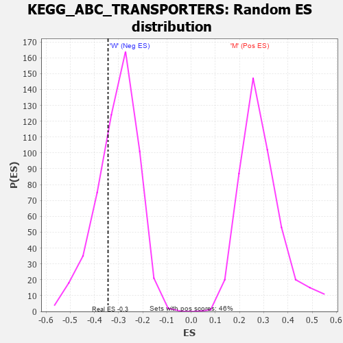

Profile of the Running ES Score & Positions of GeneSet Members on the Rank Ordered List
| Dataset | MUC16.MUC16.cls#M_versus_W.MUC16.cls#M_versus_W_repos |
| Phenotype | MUC16.cls#M_versus_W_repos |
| Upregulated in class | W |
| GeneSet | KEGG_ABC_TRANSPORTERS |
| Enrichment Score (ES) | -0.3436471 |
| Normalized Enrichment Score (NES) | -1.1225905 |
| Nominal p-value | 0.2959559 |
| FDR q-value | 1.0 |
| FWER p-Value | 0.993 |
| PROBE | DESCRIPTION (from dataset) | GENE SYMBOL | GENE_TITLE | RANK IN GENE LIST | RANK METRIC SCORE | RUNNING ES | CORE ENRICHMENT | |
|---|---|---|---|---|---|---|---|---|
| 1 | ABCB10 | na | 298 | 0.197 | 0.0419 | No | ||
| 2 | ABCB8 | na | 879 | 0.156 | 0.0691 | No | ||
| 3 | ABCA2 | na | 946 | 0.153 | 0.1047 | No | ||
| 4 | ABCA7 | na | 2624 | 0.103 | 0.0991 | No | ||
| 5 | TAP1 | na | 2878 | 0.099 | 0.1182 | No | ||
| 6 | ABCB7 | na | 3828 | 0.084 | 0.1213 | No | ||
| 7 | ABCD4 | na | 4249 | 0.079 | 0.1326 | No | ||
| 8 | ABCD3 | na | 4443 | 0.076 | 0.1474 | No | ||
| 9 | ABCA4 | na | 4675 | 0.073 | 0.1607 | No | ||
| 10 | ABCC1 | na | 5753 | 0.061 | 0.1560 | No | ||
| 11 | TAP2 | na | 6482 | 0.054 | 0.1557 | No | ||
| 12 | ABCA3 | na | 6626 | 0.052 | 0.1657 | No | ||
| 13 | ABCC8 | na | 6826 | 0.050 | 0.1743 | No | ||
| 14 | ABCA12 | na | 7238 | 0.047 | 0.1781 | No | ||
| 15 | ABCB11 | na | 9370 | 0.030 | 0.1467 | No | ||
| 16 | ABCD1 | na | 10120 | 0.024 | 0.1389 | No | ||
| 17 | ABCC3 | na | 16687 | -0.009 | 0.0221 | No | ||
| 18 | ABCA13 | na | 17988 | -0.016 | 0.0023 | No | ||
| 19 | ABCC2 | na | 18251 | -0.017 | 0.0016 | No | ||
| 20 | ABCA5 | na | 20244 | -0.026 | -0.0281 | No | ||
| 21 | ABCG4 | na | 21786 | -0.033 | -0.0481 | No | ||
| 22 | ABCG8 | na | 22223 | -0.035 | -0.0476 | No | ||
| 23 | ABCG1 | na | 22582 | -0.037 | -0.0453 | No | ||
| 24 | ABCC10 | na | 23097 | -0.039 | -0.0453 | No | ||
| 25 | ABCC4 | na | 23875 | -0.042 | -0.0493 | No | ||
| 26 | CFTR | na | 27627 | -0.056 | -0.1038 | No | ||
| 27 | ABCB4 | na | 31204 | -0.068 | -0.1523 | No | ||
| 28 | ABCG5 | na | 31321 | -0.068 | -0.1380 | No | ||
| 29 | ABCC5 | na | 34721 | -0.079 | -0.1806 | No | ||
| 30 | ABCG2 | na | 39163 | -0.093 | -0.2387 | No | ||
| 31 | ABCC6 | na | 39670 | -0.094 | -0.2251 | No | ||
| 32 | ABCB9 | na | 39955 | -0.095 | -0.2073 | No | ||
| 33 | ABCD2 | na | 44469 | -0.111 | -0.2622 | No | ||
| 34 | ABCB6 | na | 48966 | -0.133 | -0.3117 | Yes | ||
| 35 | ABCB1 | na | 50539 | -0.143 | -0.3057 | Yes | ||
| 36 | ABCB5 | na | 50590 | -0.144 | -0.2720 | Yes | ||
| 37 | ABCA9 | na | 52063 | -0.158 | -0.2607 | Yes | ||
| 38 | ABCA10 | na | 52064 | -0.158 | -0.2228 | Yes | ||
| 39 | ABCA8 | na | 53060 | -0.171 | -0.1997 | Yes | ||
| 40 | ABCA1 | na | 54040 | -0.193 | -0.1711 | Yes | ||
| 41 | ABCC11 | na | 54096 | -0.194 | -0.1253 | Yes | ||
| 42 | ABCC12 | na | 54192 | -0.197 | -0.0797 | Yes | ||
| 43 | ABCA6 | na | 54384 | -0.203 | -0.0342 | Yes | ||
| 44 | ABCC9 | na | 54516 | -0.209 | 0.0136 | Yes |

